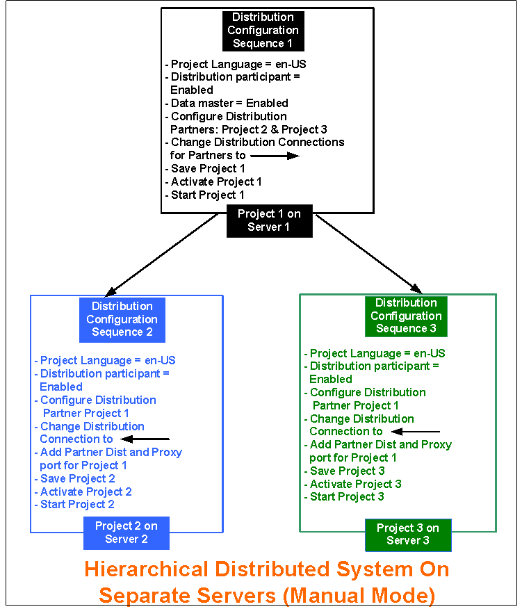
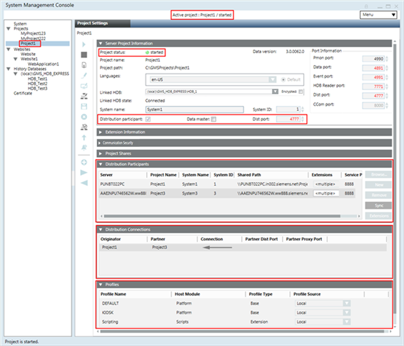
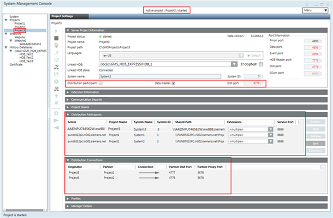

Hierarchical Distributed Systems on Separate Servers in Manual Mode
Scenario
You want to set up a Hierarchical Distributed System on separate servers. To do this, you must configure the projects on separate Servers in distribution with a (unidirectional) distribution connection.
The following procedure describes setting up three projects on different Servers in Hierarchical Distribution System using Manual mode.

NOTE 1:
On separate Servers, you can only set those projects in distribution which have the same security configuration (server communication as secured or unsecured). It is recommended that you set the projects in distribution with secured configurations.
NOTE 2:
In Manual mode, you must provide correct and valid entries for the distribution partner project. Otherwise, the distribution does not work properly. For example, while adding the distribution partner project, make sure that you add only those extensions that are configured in the distribution partner project. Otherwise, you cannot work with those extensions when working in distribution.
Prerequisites
- Using the distribution media, you have installed the setup type server on three different computers. The software version of Desigo CC, as well as the extensions installed on all the distribution Partner Systems, are the same.
- The extensions configured in one distribution partner project are installed on all the other systems participating in distribution.
- For working with Windows App client, you have installed Internet Information Services (IIS). Install Internet Information Services (IIS) on at least one Server.
- In SMC, ensure the following for the projects participating in distribution:
- You have two or more projects (having unique port numbers) and the project status is
Stopped. For example, you have stopped projects Project1, Project2 and Project3 with unique port numbers. You cannot set up an outdated project in distribution; you must first upgrade it to the current software version. - You must have the names of the extension modules configured project that you want to add as distribution partners.
- The projects in distribution have a unique System Name and System ID.
- The languages configured in the project and their sequence in which they are configured is the same in all the distribution participants.
- On all projects, you have configured server communication as secured. Additionally, on Project1 you have web server communication as Local, so you can log into the Windows App client and work with other projects in distribution.
- You must have the partner dist port and the partner proxy port numbers available for configuring distribution participant project having Server Communication as unsecured or secured.
- The server project folder is shared with the user logged onto the operating system of the distribution partner system using the Project Shares expander. Provide the shared project folder path in the Shared Path field while configuring the distribution participant in the Distribution Participants expander.
- For working with distribution using the Flex Client, the project's Pmon user (System account user as domain user) must have access rights on all the shared Server projects folders in distribution.
- For working in distribution using the Windows App Client, a web application is created and linked to Project1. The web application user must be added in the list of allowed users in the Project Shares expander of the systems in the distribution.
- The same.cer file root certificate is imported in TRCA of all the systems participating in distribution. The .pfx file host certificates, created from the root certificate present on the system participating in distribution, is available in the Personal store.
NOTE: For making the certificate available on the distribution partner system, from the server you can copy the root and the distribution partner system host files to a removable drive that you can use at the distribution partner system to import the certificates. You can also use the network access between the server and the distribution partner system to import the root and distribution partner system host into the distribution partner system. - For each project in distribution, there must be a separate HDB linked to the project. The HDBs can be on the same server as that of the projects as three HDBs or as separate HDBs on a remote SQL Server.
If the HDBs are on the same Server connected to projects in distribution, they are linked to each other automatically.
When the HDBs are on different SQL servers and you want the projects to see the data from another SQL linked to another project in distribution, you must manually link the SQL instances. - The user who is going to work with SMC (for example, create, start, and activate a project) has administrative rights. However, a non-admin user who has rights on the shared project folder on the server and rights on the host certificate used for securing the server communication on the distribution partner system. can also launch the Installed Client.
Deployment Sequence Diagram

Steps
Perform the following tasks on the separate Server using SMC.
NOTE:
To avoid having to restart the project, follow the suggested distribution configuration sequence on the Servers.
- On Server1, perform the following steps using SMC for Project1.
- In the SMC tree, select Projects > [project].
- Click Edit
 .
. - In the Server Project Information expander, do the following:
a. Enable the distribution by selecting the Distribution participant check box.
b. Select the Data Master check box. - To add the distribution partner projects in Manual mode, in the Distribution Participants expander, click Add.
- An empty row is added.
- An entry displaying the Originator project name and the default distribution connection type (
 ) displays in the Distribution Connections expander.
) displays in the Distribution Connections expander. - In the Distribution Participants expander, perform the following steps to add the details of distribution participant project. For example Project2.
- Server: Enter the name of the Server, either from the available domain or workgroup.
- Project Name: Type the name of the project with which you want work in distribution.
- System Name: Type the system name of the project you have selected.
- System ID: Type the system ID of the project you have selected.
- Shared Path: Type the shared project path of the project that you have selected as the distribution participant project.
- Service Port: (Optional and required only when you have Service port of the distribution partner project other than the default port number 8888.) Provide the service port to match the service port number of the distribution partner project.
- To add the extension modules, click Extensions.
- In the Select Project Extensions dialog box, expand the extension suite’s name and select only the extensions configured in the distribution partner project, Project2.
- Click OK.
- Depending on the selection of extensions, the Extensions column is updated to display either the name of the extension module, when you configure a single extension, or <multiple> when there are many extensions in the project.
- The Profiles expander is updated with the profiles for the selected distributed participant project along with the profiles of its extensions.
- Open the Distribution Connections expander and perform the following steps:
a. Change the default Distribution Connection type for the partner project (Project2) to (unidirectional) so that
so that
Project1 Project2.
b. Do not add the partner dist port or and partner proxy port details for Project1. - Repeat steps 6 to 10 for adding distribution participant as Project3 in Project1.
- Click Save Project
 .
.
NOTE: You cannot save the Originator project that has multiple distribution partners with the same System Name and System ID. - Click OK for all the messages that display.
- Click Activate Project
 .
. - Click and Start Project
 .
. - The distribution is enabled for Project1 on Server1. It has distribution partner projects as Project2 (on Server2) and Project3 (on Server3).

- Log on to Server2, and perform the following steps using SMC for Project2.
- In the SMC tree, select Projects > [project2].
- Repeat steps 4 to 13 for configuring the distribution participant project as Project1.
- In the Distribution Connections expander, do the following:
a. Change the default distribution connection type for Partner projects, Project1, to (unidirectional) so that
Project2 Project1.
Project1.
b. Enter the partner dist port number of the project, Project 1 that you have configured in distribution.
NOTE: It is recommended that the partner dist port entry is present on only one system; not on both systems.
c. (Optional and required only when the distribution partner project is secured with certificates.) Enter the partner proxy port number of the secured project, Project1 that you have configured in distribution. - The distribution is enabled for Project2 on Server2, where Project1 (on Server1) is configured as distribution Partner project.
- Click Save Project .
- Click OK.
- (Recommended) Click Check Distribution Consistency and view the log.
- First click Activate Project to activate Project2 and then click Start Project
.
- The distribution is enabled for Project2 on Server2, where Project1 (on Server1) is configured as distribution participant project.
- Repeat steps 16 to 22 for Project3 on Server3, by adding the partner dist port and partner proxy port for Project1 and by changing the distribution connection such that
Project3 Project1. 
- Launch the Installed Client on the Supervising System (Originator System, System1 with Project1 as the Data Master).
- With the System Manager in Engineering mode and the System Manager in the Management View, select Project1 > System Settings > Security and perform the following on the Supervising System.
a. Create the Global User.
b. Create the Global User Group.
c. Assign the Global User to the Global User group.
d. Assign global Scopes rights and the Application rights.
e. Enable User. - In the Summary bar, select Menu > Operator > Switchover and switch the operator from the current user to the Global User.
- You are now logged in with the Global User into the Installed Client of the Supervising System (Originator Project1). You can now work with the distribution partner projects Project2 (System2) and Project3 (System3).
- You can also launch the Windows App client for System1 (with Project1) and work with Partner Systems in distribution, System2 (with Project2) and System3 (with Project3).

- If you activate one of the partner systems, for example System2 with Project2, and log onto the Installed Client on System2, you can only work with the Local System (System2 with Project2).